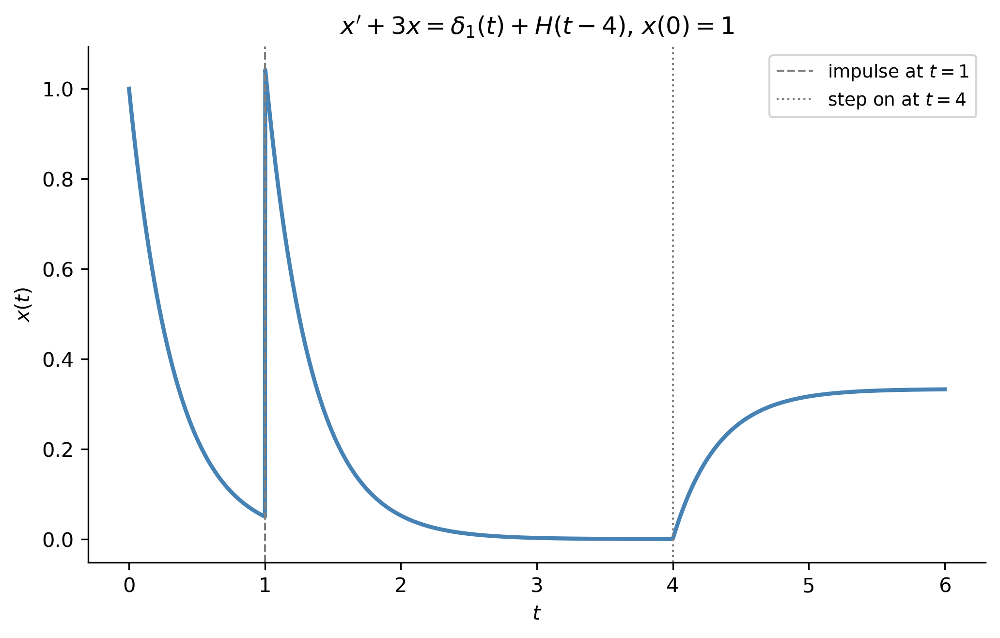

# This is a code cell that imports the necessary libraries for our session.import numpy as np # NumPy for numerical computationsimport scipy as sp # SciPy for scientific computingimport sympy as sym # SymPy for symbolic mathematicsimport matplotlib as mpl # Matplotlib for plottingimport matplotlib.pyplot as plt # Matplotlib pyplot interfacefrom scipy.integrate import solve_ivp # ODE solvermpl.rcParams['figure.dpi'] =150mpl.rcParams['axes.spines.top'] =Falsempl.rcParams['axes.spines.right'] =False
This page collects full solutions to select exercises from Homework 7. Each solution is worked out “by hand” and then, where helpful, confirmed symbolically using SymPy or other computational tools. See the Homework Solutions page for the full list.
Section 3.3 — The Convolution Property
Exercise 1: Compute the Following Convolutions
(a) \(\sin t * \cos t\).
By the convolution theorem, \(\mathcal{L}[f*g] = F(s)G(s)\). With \(F(s)=\mathcal{L}[\sin t]=\dfrac{1}{s^2+1}\) and \(G(s)=\mathcal{L}[\cos t]=\dfrac{s}{s^2+1}\): \[
\mathcal{L}[\sin t * \cos t] = \frac{s}{(s^2+1)^2}.
\]
Using the resonance pair \(\mathcal{L}^{-1}\left[\dfrac{s}{(s^2+k^2)^2}\right] = \dfrac{t}{2k}\sin kt\) with \(k=1\):
\[
\boxed{\sin t * \cos t = \frac{t}{2}\sin t.}
\]
(c) \(t * t^2\).
\(\mathcal{L}[t]=\dfrac{1}{s^2}\), \(\mathcal{L}[t^2]=\dfrac{2}{s^3}\), so \(\mathcal{L}[t*t^2] = \dfrac{2}{s^5}\). Using \(\mathcal{L}^{-1}\left[\dfrac{n!}{s^{n+1}}\right]=t^n\) with \(n=4\) (so \(\mathcal{L}^{-1}[1/s^5]=t^4/4!\)):
t, tau, s = sym.symbols('t tau s', positive=True)print("1a:", sym.simplify(sym.integrate(sym.sin(tau)*sym.cos(t-tau), (tau, 0, t))))print("1c:", sym.simplify(sym.integrate(tau*(t-tau)**2, (tau, 0, t))))
1a: t*sin(t)/2
1c: t**4/12
Note
Both convolution integrals, computed directly from the definition \((f*g)(t)=\int_0^tf(\tau)g(t-\tau)\,d\tau\), confirm the boxed formulas obtained via the convolution theorem.
Exercise 3
(a) Using Laplace transforms and the convolution property, find the general solution of \(x'-ax=f(t),\ x(0)=x_0\).
Since \(\mathcal{L}^{-1}\left[\dfrac{1}{s-a}\right]=e^{at}\), the first term inverts to \(x_0e^{at}\), and the second term is a product of transforms, so it inverts to a convolution:
(b) Solve using an integrating factor, and compare.
By Hand. Write \(x'-ax=f(t)\) with integrating factor \(\mu(t)=e^{-at}\). Then \((e^{-at}x)' = e^{-at}f(t)\). Integrating from \(0\) to \(t\): \[
e^{-at}x(t) - x(0) = \int_0^te^{-a\tau}f(\tau)\,d\tau \quad \Longrightarrow \quad x(t) = x_0e^{at} + e^{at}\int_0^te^{-a\tau}f(\tau)\,d\tau.
\]
Pulling \(e^{at}\) inside the integral (it doesn’t depend on \(\tau\)): \[
x(t) = x_0e^{at} + \int_0^te^{a(t-\tau)}f(\tau)\,d\tau.
\]
Tip
This is identical to the Laplace-transform result in part (a) — the convolution integral that falls out of the Laplace approach is exactly the particular-solution integral that the integrating-factor method produces directly. This is a nice concrete illustration of why the convolution theorem “works”: it’s really just packaging the variation-of-parameters/integrating-factor formula into transform language.
Exercise 6
Solve the initial value problem \(x''-\omega^2x=f(t),\ x(0)=x'(0)=0\).
Compare this to Example 3.25 in the text, which solves \(x''+k^2x=f(t)\) (oscillatory case) and gets the structurally identical formula with \(\sin k(t-\tau)/k\) in place of \(\sinh\omega(t-\tau)/\omega\) — replacing \(k^2\) with \(-\omega^2\) turns sines into hyperbolic sines, exactly as the characteristic roots change from imaginary (\(\pm ik\)) to real (\(\pm\omega\)).
Exercise 7
Solve the initial value problem \(x''-4x=1-H(t-1),\ x(0)=x'(0)=0\).
SymPy’s dsolve output is algebraically messier (it doesn’t automatically recognize \(\cosh\)) but numerically agrees with the boxed formula at every test point.
Exercise 8
Express the solution of \(x''+3x'+2x=e^{-4t},\ x(0)=x'(0)=0\) as a convolution integral.
The transfer function of the system (homogeneous part) is \(\dfrac{1}{(s+1)(s+2)}\), whose inverse — the impulse response — is, via partial fractions \(\dfrac{1}{(s+1)(s+2)} = \dfrac{1}{s+1}-\dfrac{1}{s+2}\): \[
g(t) = e^{-t}-e^{-2t}.
\]
Since the forcing \(f(t)=e^{-4t}\) has \(F(s)=\dfrac{1}{s+4}\), and \(X(s)=G(s)F(s)\), the solution is the convolution \(x=g*f\):
Evaluating the convolution integral explicitly gives \(x(t) = \dfrac{2e^{3t}-3e^{2t}+1}{6}e^{-4t}\), which matches SymPy’s independent dsolve solution exactly — confirming the convolution integral is correct (even though the exercise only asks for the integral form, not its evaluation).
Exercise 9
Express the solution of \(x''+2x'+2x=\sin\omega t,\ x(0)=x'(0)=0\) as a convolution integral.
Completing the square, \(s^2+2s+2=(s+1)^2+1\). The transfer function \(\dfrac{1}{(s+1)^2+1}\) has impulse response (via the shift theorem, with \(\mathcal{L}^{-1}[1/(s^2+1)]=\sin t\)): \[
g(t) = e^{-t}\sin t.
\]
Since \(f(t)=\sin\omega t\), the solution is \(x=g*f\):
w = sym.symbols('omega', positive=True)g9 = sym.exp(-tau)*sym.sin(tau)eq9 = sym.Eq(sym.diff(x(t),t,2) +2*sym.diff(x(t),t) +2*x(t), sym.sin(w*t))sol9 = sym.dsolve(eq9, x(t), ics={x(0): 0, x(t).diff(t).subs(t, 0): 0})# Numerically compare the evaluated convolution to dsolve's closed form.# Substitute each numeric omega into the integrand BEFORE integrating --# integrating with omega left symbolic is extremely slow in SymPy.for wv, tv in [(1, 1.0), (2, 0.5), (0.5, 2.0)]: conv_val = sym.integrate(g9*sym.sin(wv*(t-tau)), (tau, 0, t)).subs(t, tv) a =float(conv_val) b =float(sol9.rhs.subs({w: wv, t: tv}))print(f"omega={wv}, t={tv}: convolution={a:.6f}, dsolve={b:.6f}, diff={abs(a-b):.2e}")
The convolution integral, evaluated numerically at several \((\omega,t)\) pairs, matches SymPy’s independently-derived closed-form solution in every case.
Exercise 12
Use convolution to calculate \(\mathcal{L}^{-1}\left[\dfrac{1}{s^2(s^2+1)}\right]\).
By Hand.
Write \(\dfrac{1}{s^2(s^2+1)} = \dfrac{1}{s^2}\cdot\dfrac{1}{s^2+1} = F(s)G(s)\) with \(F(s)=\mathcal{L}[t]\) and \(G(s)=\mathcal{L}[\sin t]\). By the convolution theorem, \[
\mathcal{L}^{-1}\left[\frac{1}{s^2(s^2+1)}\right] = t*\sin t = \int_0^t\tau\sin(t-\tau)\,d\tau.
\]
Expanding \(\sin(t-\tau)=\sin t\cos\tau-\cos t\sin\tau\) and using \(\int_0^t\tau\cos\tau\,d\tau = t\sin t+\cos t-1\) and \(\int_0^t\tau\sin\tau\,d\tau=-t\cos t+\sin t\): \[
t*\sin t = \sin t\,(t\sin t+\cos t-1) - \cos t\,(-t\cos t+\sin t) = t(\sin^2t+\cos^2t) - \sin t = t-\sin t.
\]
conv12 = sym.integrate(tau*sym.sin(t-tau), (tau, 0, t))print("Convolution t * sin t =", sym.simplify(conv12))F12 =1/(s**2*(s**2+1))f12 = sym.inverse_laplace_transform(F12, s, t)print("Direct inverse transform:", sym.simplify(f12))
Convolution t * sin t = t - sin(t)
Direct inverse transform: t - sin(t)
Note
Both the hand-computed convolution and SymPy’s direct inverse-transform computation give \(t-\sin t\).
Exercise 13
Use convolution to compute \(\mathcal{L}^{-1}\left[\dfrac{1}{(s^2+1)^2}\right]\).
By Hand.
Write \(\dfrac{1}{(s^2+1)^2} = \dfrac{1}{s^2+1}\cdot\dfrac{1}{s^2+1} = F(s)G(s)\) with \(F(s)=G(s)=\mathcal{L}[\sin t]\). By the convolution theorem, \[
\mathcal{L}^{-1}\left[\frac{1}{(s^2+1)^2}\right] = \sin t*\sin t = \int_0^t\sin\tau\sin(t-\tau)\,d\tau.
\]
Using the product-to-sum identity \(\sin\tau\sin(t-\tau) = \dfrac12\big[\cos(2\tau-t)-\cos t\big]\): \[
\int_0^t\sin\tau\sin(t-\tau)\,d\tau = \frac12\int_0^t\cos(2\tau-t)\,d\tau - \frac{\cos t}{2}\int_0^td\tau.
\]
The first integral evaluates to \(\dfrac12\left[\dfrac{\sin(2\tau-t)}{2}\right]_0^t = \dfrac14\big[\sin t-\sin(-t)\big] = \dfrac{\sin t}{2}\), and the second is simply \(\dfrac{t\cos t}{2}\). Subtracting:
\[
\boxed{\mathcal{L}^{-1}\left[\frac{1}{(s^2+1)^2}\right] = \frac{\sin t - t\cos t}{2}.}
\]
conv13 = sym.integrate(sym.sin(tau)*sym.sin(t-tau), (tau, 0, t))print("Convolution sin t * sin t =", sym.simplify(conv13))F13 =1/(s**2+1)**2f13 = sym.inverse_laplace_transform(F13, s, t)print("Direct inverse transform:", sym.simplify(f13))
Convolution sin t * sin t = -t*cos(t)/2 + sin(t)/2
Direct inverse transform: -t*cos(t)/2 + sin(t)/2
Note
Both the hand-computed convolution and SymPy’s direct inverse-transform computation give \(\dfrac{\sin t - t\cos t}{2}\).
Tip
Compare with Exercise 1(a) above: \(\sin t*\cos t = \dfrac{t}{2}\sin t\), while \(\sin t*\sin t = \dfrac{\sin t-t\cos t}{2}\). Both involve the same “resonance” mechanism — convolving a sinusoid with itself (or a phase-shifted copy of itself) at matching frequency produces a term that grows linearly in \(t\), the time-domain signature of the repeated pole at \(s=\pm i\) in \((s^2+1)^2\).
By Hand. Here \(\delta_4(t)\) denotes \(\delta(t-4)\). By the sifting property \(\int_{-\infty}^\infty f(t)\delta(t-a)\,dt=f(a)\), with \(f(t)=e^{-2(t-3)^2}\) and \(a=4\):
Using \(\mathcal{L}^{-1}\left[\dfrac1{s+3}\right]=e^{-3t}\) and, by partial fractions, \(\mathcal{L}^{-1}\left[\dfrac{1}{s(s+3)}\right] = \dfrac13\left(1-e^{-3t}\right)\), together with the shift theorem:
SymPy’s result, regrouped by Heaviside factor, is algebraically identical to the boxed formula.
Show the code
def x2_func(tt): tt = np.asarray(tt, dtype=float) out = np.exp(-3*tt) out = out + np.where(tt >=1, np.exp(-3*(tt-1)), 0.0) out = out + np.where(tt >=4, (1/3)*(1-np.exp(-3*(tt-4))), 0.0)return outt_vals = np.linspace(0, 6, 2000)fig, ax = plt.subplots(figsize=(7, 4.5))ax.plot(t_vals, x2_func(t_vals), color='steelblue', lw=2)ax.axvline(1, color='gray', linestyle='--', lw=1, label='impulse at $t=1$')ax.axvline(4, color='gray', linestyle=':', lw=1, label='step on at $t=4$')ax.set_xlabel('$t$')ax.set_ylabel('$x(t)$')ax.set_title(r"$x'+3x=\delta_1(t)+H(t-4)$, $x(0)=1$")ax.legend(fontsize=9)plt.tight_layout()plt.show()

Figure 1: Solution of \(x'+3x=\delta_1(t)+H(t-4)\), \(x(0)=1\). The impulse at \(t=1\) produces an instantaneous jump in \(x\); the step input switching on at \(t=4\) then drives the solution toward a new equilibrium of \(1/3\).
Exercise 3
Solve the initial value problem \(x''-x=\delta_5(t),\ x(0)=x'(0)=0\). Sketch the solution.
Figure 2: Solution of \(x''-x=\delta_5(t)\), \(x(0)=x'(0)=0\). The impulse at \(t=5\) imparts an instantaneous unit jump in velocity, launching the (unstable) exponential runaway characteristic of \(x''-x=0\).
Exercise 4
Solve the initial value problem \(x''+x=\delta_2(t),\ x(0)=x'(0)=0\). Sketch the solution.
Figure 3: Solution of \(x''+x=\delta_2(t)\), \(x(0)=x'(0)=0\). The impulse at \(t=2\) launches a pure, undamped unit-amplitude oscillation — the system’s impulse response for the simple harmonic oscillator.
Tip
Exercises 3 and 4 are a nice contrast: both impulses inject the same kind of instantaneous “kick” (a unit jump in velocity at the moment of impact), but the underlying dynamics are completely different — \(x''-x=0\) is unstable (exponential growth after the kick), while \(x''+x=0\) is neutrally stable (perpetual oscillation after the kick).
Exercise 5
Invert the transform \(F(s) = \dfrac{e^{-2s}}{s} + e^{-3s}\).
By Hand.
Each term is handled separately:
\(\mathcal{L}^{-1}\left[\dfrac{e^{-2s}}{s}\right] = H(t-2)\), by the shift theorem applied to \(\mathcal{L}^{-1}[1/s]=1\).
\(\mathcal{L}^{-1}\left[e^{-3s}\right] = \delta(t-3)\), since \(\mathcal{L}[\delta(t-a)] = e^{-as}\), so a bare exponential \(e^{-as}\) (with no other factor) inverts to a pure delta spike.
Let \(x_1=x,\ x_2=x'\). Then \(x_1'=x_2\), and \(x_2'=x''=-x'-x^3=-x_2-x_1^3\).
\[
\boxed{x_1'=x_2, \qquad x_2'=-x_1^3-x_2.}
\]
Why this can’t be written as \(\mathbf{x}'=A\mathbf{x}\). A matrix equation \(\mathbf{x}'=A\mathbf{x}\) requires every component on the right-hand side to be a linear combination of \(x_1\) and \(x_2\) — i.e. each row of \(A\mathbf{x}\) has the form \(a_{i1}x_1+a_{i2}x_2\). Here the second equation contains the term \(-x_1^3\), which is cubic, not linear, in \(x_1\). No constant matrix \(A\) can reproduce a cubic term by multiplying \(\mathbf{x}\), so the system is inherently nonlinear and cannot be put in the form \(\mathbf{x}'=A\mathbf{x}\).
(b) System in Matrix/Vector Form
Write \(x_1'=3x_1-x_2,\ x_2'=2x_1+4x_2\) in the form \(\mathbf{x}'=A\mathbf{x}\).
Reading the coefficients directly off each equation:
The characteristic equation is \(\det(N_1-\lambda I)=0\): \[
(5-\lambda)(2-\lambda)-(-2)(-2) = \lambda^2-7\lambda+6 = (\lambda-1)(\lambda-6) = 0 \quad \Longrightarrow \quad \lambda=1,\ 6.
\]
For \(\lambda=1\):\(N_1-I=\begin{pmatrix}4&-2\\-2&1\end{pmatrix}\). The equation \(4v_1-2v_2=0\) gives \(v_2=2v_1\), so an eigenvector is \(\begin{pmatrix}1\\2\end{pmatrix}\).
For \(\lambda=6\):\(N_1-6I=\begin{pmatrix}-1&-2\\-2&-4\end{pmatrix}\). The equation \(-v_1-2v_2=0\) gives \(v_1=-2v_2\), so an eigenvector is \(\begin{pmatrix}-2\\1\end{pmatrix}\).
For \(\lambda=3\):\(N_2-3I=\begin{pmatrix}-1&4\\1&-4\end{pmatrix}\). The equation \(-v_1+4v_2=0\) gives \(v_1=4v_2\), so an eigenvector is \(\begin{pmatrix}4\\1\end{pmatrix}\).
For \(\lambda=-2\):\(N_2+2I=\begin{pmatrix}4&4\\1&1\end{pmatrix}\). The equation \(4v_1+4v_2=0\) gives \(v_1=-v_2\), so an eigenvector is \(\begin{pmatrix}-1\\1\end{pmatrix}\).
SymPy confirms both eigenvalue/eigenvector pairs for \(N_1\) and \(N_2\) (its eigenvector for \(N_1\)’s \(\lambda=1\) is \(\begin{pmatrix}1/2\\1\end{pmatrix}\), a scalar multiple of the boxed \(\begin{pmatrix}1\\2\end{pmatrix}\) — any nonzero scalar multiple of an eigenvector is itself a valid eigenvector).
Tip
Both \(N_1\) and \(N_2\) are diagonalizable (two linearly independent eigenvectors each), so for a system \(\mathbf{x}'=N\mathbf{x}\) built from either matrix, the general solution is a superposition of the pure exponential modes \(e^{\lambda_1t}\mathbf{v}_1\) and \(e^{\lambda_2t}\mathbf{v}_2\) — exactly the picture described in the assignment’s notes on eigenvalues as the “natural directions” of a linear system.
References
TipExpand for Session Info
Show the code
import sys # sys for system-specific parameters and functionsprint("Python version:", sys.version)print('\n'.join(f'{m.__name__}=={m.__version__}'for m inglobals().values() ifgetattr(m, '__version__', None)))